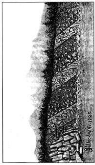

VII. BÖLÜM
MU MEDENİYETİ’NİN YAŞI
Mu medeniyetinin 50 bin yıldan önceye dayandığını belirtmiştim. Şimdi bu tarihi hangi temele dayandırdığımı görelim:
Le Plongeon, Kral Can’ın en büyük oğlu ve aynı zamanda başrahip olan Cay’ın, Chichen Itza, Yucatan’daki anıt mezarında on iki başlı bir yılan oymasıyla, bu yılanın Can hanedanından önce 18 bin yıl boyunca hüküm sürmüş on iki Maya hanedanının sembolü olduğunu anlatan bir kitabe buldu.
Son Kral Can’ın 16 bin yıl önce yaşamış olduğu Troano Elyazması ile kanıtlanıyor. 16 bine 18 bin eklediğimizde, kralların 34 bin yıl önce Mayax’a hüküm sürdüklerini görüyoruz. Can hanedanının ne kadar sürdüğü bilinmiyor. Öte yandan, bu hanedandan gelen en az altı kral vardı ve bir düzineden fazla kral olması da mümkün; dolayısıyla ilk Mayax kralının tahta çıkışından bu yana 35 bin yıl geçtiğini söylemek mantıksız olmayacaktır. Mayax, Mu’nun ilk koloni imparatorluklarından biriydi ve varlığına basit bir yerleşim olarak başlamıştı. Böyle esaslı bir değişim zaman almış olmalı, yani Mu medeniyetinin 35 bin yıldan çok daha eskiye dayanıyor olması gerekli.
Bu on iki kral hanedanının 18 bin yıl hüküm sürmüş oldukları, Çin kitabı Tchi tarafından doğrulanıyor. Japonya’da da on iki kral hanedanının 18 bin yıl önce hüküm sürdüğüne dair belgeler var. Ayrıca eski bir Hint tableti de saltanatlarının toplamı 18 bin yıldan uzun süren on iki kral hanedanından bahsediyor. Aynı bilgi antik bir Hint elyazmasında da geçiyor. Bu kayıtların haricinde Hindistan ve Çin’de sayısız efsane toplam saltanatları 18 bin yıldan uzun süren on iki hanedanı anlatıyor. Öte yandan, Chichen Itza kitabesi dışındaki belgelerin hiçbiri bu hanedanların nerede hüküm sürdüğü konusunda en ufak bir ipucu vermiyor.
Mısırlı rahip ve tarihçi Manetho, papirüslerinden birinde şöyle yazıyor: “Atlantis Bilgeleri’nin hükümdarlığı 13.900 yıl sürdü.” Atlantis 11.500 yıl önce sulara gömülmüştü. 11.500’e 13.900 eklediğimizde Atlantis’in yaklaşık 25.000 yıl önce krallar tarafından yönetildiğini görüyoruz. İlk Atlantis kralı 24.500 yıl önce, ilk Mayax kralı ise 34.000 yıl önce tahta çıkmıştı. Bu ikisi arasındaki fark 8.500 yıl. Aynı farkın ilk Mu imparatoru ile ilk Mayax kralı arasında da bulunduğunu varsayarsak, Mu’nun 50.000 yıldan daha uzun bir süre önce ihtişamının doruğunda olduğunu söyleyebiliriz.
Bilim dünyası bunun yalnızca tahmin olduğunu söyleyebilir, bu durumda biz de jeolojiyi yardımımıza çağıralım ve John Tyndall’ın dediği gibi, “işin özüne inelim.”
Büyük Manyetik Felaket’i takiben dağların oluşması ne za-

James Churchward tarafından çizilmiştir. Antik Şehir Smyrna’dan (İzmir) bir yol kazısı. Deniz seviyesinden
500 feet yüksekte, dağlar oluşmadan önce üç medeniyet bulunuyordu.
man gerçekleşti? Eğer jeolojinin mitlerine inanacak olursak, bazıları yüz binlerce, bazıları milyonlarca yıl önce demeliyiz. Şimdi size dağlar yükselmeden, bazıları dünyanın yüzünde tek bir dağ belirmeden binlerce yıl önce var olmuş yedi medeniyet göstereceğim. Jeolojiye göre Mu kökenli bu medeniyetleri Mu medeniyetinin çağının yüz binlerce yıl önce başladığını düşündürmeli. Oysa durum böyle değil ve jeoloji, alışıldığı üzere yanılıyor.
Smyrna’da (izmir), deniz seviyesinden 500 feet yüksekte üzerleri bir kum, çakıl ve kaya tabakasıyla örtülmüş, birbiri üstünde yer alan üç medeniyet görülebilir. Bu medeniyetler yatay değil, resimde de görülebileceği gibi 45 derecelik bir açıyla yatıyorlar. Bu uygarlıklar dağın yamacını takip eden bir açıyla yatıyor olmasa, bilim insanlarımız bunların bir tepe üzerine inşa edildiklerini ve yükselmediklerini öne sürebilirlerdi. Oysa açıları, dağlar yükselmeden önce var olduklarının kanıtı. Peki bu medeniyetler ne kadar eski? Bunun cevabını bilim dünyasına bırakıyorum; Anadolu’daki bu dağların yaşlarını söylemeyi de.
Niven, Mexico City’nin 29 mil kuzeyinde, birbirinin üzerinde kum, kaya ve çakıl tabakalarıyla ayrılmış hâlde gömülü üç medeniyet keşfetti. Bu şehirler deniz seviyesinin 1.000 mil üzerinde ve denizle aralarında, yükseklikleri 5 bin ile 15 bin feet arasında değişen dağlar var. Buradaki kayaların izini Meksika’nın batı kıyısındaki bir kaya oluşumuna kadar takip ettim. Kayaların kaynağı ile şehirler arasındaki en alçak dağın yüksekliği 5 bin feet.
Kalabalığın bu şehirlerin sokaklarını arşınladığı antik zamanlarda, okyanus bu kayaların yontup son dinlenme yerlerine savurmak için dalgalarını 5 bin feet yükseğe mi uzatıyordu? Veya Meksika bu kayaları şimdi yattıkları yere taşımak için gerektiğinde bir buzul mu ödünç alıyordu?
Oysa Meksika’da olanlar bunlar değildi. Bu şehirler -içlerinde bulunan ve benim deşifre ve tercüme ettiğim tabletlerin de gösterdiği gibi- dağlar yükselmeden önce inşa edilmişti ve Mu’nun kolonileriydi.
Jeolojik olarak, en alttaki şehir Üçüncü Devir’in içlerine uzanıyor. Şehir 50 bin yıldan daha uzun bir zaman önce bir Mu kolonisi olarak varlığını sürdürüyordu. Bu arkeolojik keşifle ilgili resim ve detaylar 11. bölümde bulunabilir.
Son örnek ise And Dağları’ndaki Titicaca Gölü’nde bulunan Tiahuanaco. Bu antik şehrin içinde ve çevresinde, şehrin ilk kurulduğunda deniz seviyesinin hemen üzerinde olduğunu gösteren kanıtlar mevcut. Oysa şehir şimdi deniz seviyesinin 15 bin feet üzerinde bulunuyor. Bu bilgiler, Mu medeniyetinin 50 bin yıldan daha önceye dayandığının kesin kanıtlarıdır.